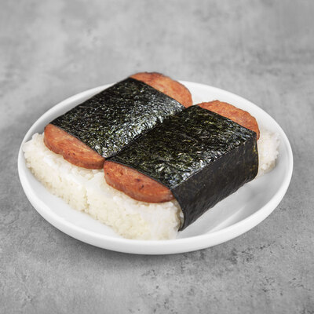

Spam Musubi

Spam musubi
Simple dish made in Hawaii and Japan that consists of sliced spam, marinated, and fried.
Can be made with some omlette added between the spam and nori.
Best served alongside sauces.
Can be stored for a day, maybe two in the fridge.
Properly heat it, not too much as the nori might become ruined.
Ingredients
- Spam (less sodium healthier), 12 oz, (cut into halves or thirds as needed)
- rice (2-3 cups)
- soy sauce (1/4 cup)
- sugar (1/2 cup)
- omlette (optional)
Steps
- Slice the spam into 8-10 slices and put in a Ziplock bag. Add the soy sauce and sugar to the bag and mix well. Let marinate for 15 minutes.
- Drain the marinade and fry the spam on each side over medium heat until slightly crispy or until desired doneness.
- Place a strip of nori on a cutting board (shiny side down) and place the musubi mold across the middle of the nori. Add rice to the mold, pressing down firmly and evenly.
- Remove the mold from the rice, add any condiments (kewpie mayo is a common one) and wrap up one side of the nori to stick to the top of the spam. Then, wrap up the other side. Use a little water to seal if needed. Serve warm.